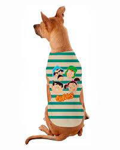
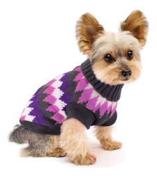

Descrição
O Moletom para Cachorros Dinossauro Azul com Amarelo é um produto exclusivo da Bichinho Virtual em parceria com a Dog & Design.
Além de ser quentinho, esse moletom é uma fofura! Perfeito para seu bichinho ficar super estiloso nos dias de inverno!
Passear com um dinossauro pequeno e peludo pelas ruas, é sucesso garantido!
O tom de azul pode variar conforme disponibilidade.
Essa roupinha pet é muito confortável e está disponível em 13 tamanhos diferentes, com numeração que varia do PPP ao 9G, para cachorrros pequenos, médios e grandes.
O tecido moletom de cor verde tem toque delicado e interior peluciado. A parte interna do capuz é forrado em malha rosa. A roupinha tem detalhe rosa nas costas, que lembra os espinhos do dinossauro, o que deixa ela ainda mais fofa e divertida. O moletom também possui abertura na parte das costas, para passar a guia de passeio.
Como escolher o melhor tamanho para meu pet?
É necessário fazer as medidas do tórax, pescoço e comprimento dele, conforme mostra a imagem logo abaixo.
Após ter as medidas em mãos, se o seu cachorro for de porte pequeno e médio coloque 10cm a mais na medida do tórax e 5cm a mais na medida do pescoço, já se o seu cachorro for de porte grande ou gigante coloque 20cm a mais na medida do tórax e 10cm a mais na medida do pescoço, para que seu pet tenha maior conforto e mobilidade ao vestir a peça.
Agora é só comparar essas medidas com a tabela da roupinha e ver qual se encaixa melhor para ele.
As principais medidas são a do tórax e a do pescoço. O comprimento não precisa cobrir toda as costas do animal.
Se as medidas do seu bichinho tiverem ficado muito próximas ou iguais a medida máxima de um dos tamanhos, escolha o tamanho maior.
Essa roupinha está disponível em 13 tamanhos diferentes, com numeração que vai do PPP ao 9G. Os tamanhos PPP e P são para cachorros de micro porte. Os tamanhos M, G e GG são para cachorros de pequeno porte. Os tamanhos 3G, 4G e 5G são para cachorros de médio porte. Já os tamanhos 6G, 7G, 8G e 9G, são para os cachorros de grande porte.
Meu pet usa tamanho G de outra marca, ele vai usar o tamanho G desta roupinha também?
Não necessarimente, pois cada marca fabricante de roupas pet usa uma modelagem própria, com medidas diferentes umas das outras. Então o tamanho G da marca "X" não é o mesmo tamanho G da marca "Y". Isso acontece com todos os outros tamanhos.
O capuz pode cair no rosto do pet e atrapalhar ele?
Essa roupinha tem um capuz grande, mas é fácil de evitar que ele caia no rosto do pet. Basta enrolar o capuz para trás, que ele ficará bem firme, e assim, dificilmente ele cairá para frente novamente.Gatinhos também podem usar esse moletom?
Podem, sim! Para os gatinhos que gostam de roupinha, esse modelo de moletom é super confortável e terá um caimento muito bom no corpinho deles.
Qual é o tamanho que a cachorrinha das fotos está usando?
A Golden, de 30kg, está usando tamanho 8G. Mas não deixe de medir seu pet, pois as medidas dele podem ser diferentes das medidas da cachorrinha das fotos.
Qual o material da roupinha e os cuidados que devo ter com ela?
Ela é fabricada em tecido moletom de alta qualidade e durabilidade, sendo 68% algodão e 32% poliéster.
Para limpeza superficial do moletom, pode ser utilizado pano úmido. Já a lavagem da peça pode ser feita à mão ou na máquina de lavar, preferencialmente em modo delicado. Indicamos utilizar sabão neutro. Não usar alvejante, não usar secadora, não limpar à seco e evitar o uso de ferro de passar.
.Ainda está com dúvidas?
Entre em contato com a gente pelo WhatsApp. Clique aqui
Produtos relacionados
moletom para cachorro
 